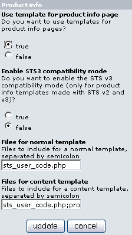

Version: v2.1.0
File: catalog/includes/modules/sts/sts_product_info.php
Author: Christophe Buchi aka Rigadin2
This is the module used when the “product_info.php” page is displayed. If it is not installed or is disabled, the default module will be used.

| Parameter | Comment |
| Use templates for product info page | Select 'True' to use or 'False' to continue using the STS default module. Keep it set to 'False' if you don't have specific templates for your products. |
| Enable STS3 compatibility mode | Select 'True' if you have templates like “product_info.php.html” or “product_info.php_ID.html” which are not using $content but all the specific product info variables. This is for compatibility with STS v2 and v3 templates, as STS v4 works a bit different with product info templates. To reduce parse time, I recommend setting this to ‘False’ and use a content template instead. |
| Files for normal template | List the files to include when displaying “product_info.php”
using a general template only (like the old STS versions do), separated by
semicolons. See STS default module for more details. The default value is: “sts_user_code.php”. |
| Files for content template | List the files to include when displaying “product_info.php”
using a template for the content part of the page plus a general template
(the one with header, columns, footer). The default value is: “sts_user_code.php;product_info.php”. |
How it works, general template:
Main templates are templates containing the columns, header and footer. The
center of the page only contains the $content placeholder.
With this module you have the possibility to define a separate "content
template" that will replace the $content of the main template. Content templates
must be located in the "content" folder inside the templates folder (includes/sts_templates/test/content
by default)
When the module is enabled, it looks in the template folder to see what templates exist. It is possible to define templates based on the product ID or it's category ID. Templates must be located in the templates folder (includes/sts_templates/single by default) .It works as so (first found first used):
1. Check for a main template based on the product ID, for example product with ID 4:
1.1 Use product_info.php_4.html if exists.
2. Check for category specific main template, based on the category ID where the product is located. (Example below with a product located in category 22, located in category 11)
2.1 Use product_info.php_c11_22.html if exists.
2.2 Use product_info.php_c11.html if exists.
2.3 Use product_info.php.html if exists.
3. No specific template found, use default template as defined in the default module (by default it is sts_template.html)
Now that we have a main template, look if there is a content template, based on product ID and the category where it belongs: example with product ID4:
1.1 Use product_info.php_4.html if exists.
2. Check for category specific content template, based on the category ID where the product is located. (Example below with a product located in category 22, located in category 11)
2.1 Use product_info.php_c11_22.html if exists.
2.2 Use product_info.php_c11.html if exists.
2.3 Use product_info.php.html if exists.
If no content template is found then do not use any, $content will come from the original catalog/product_info.php .